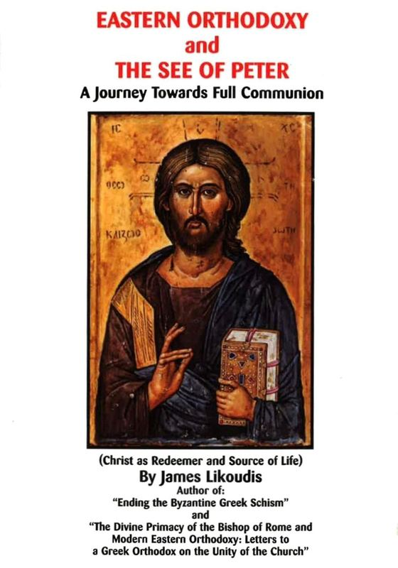
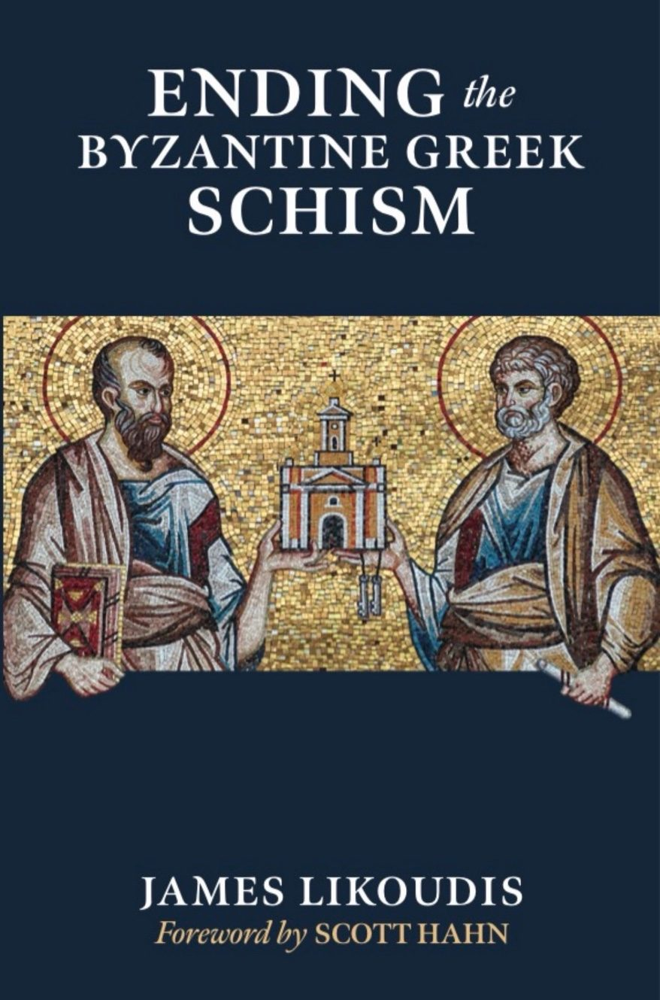
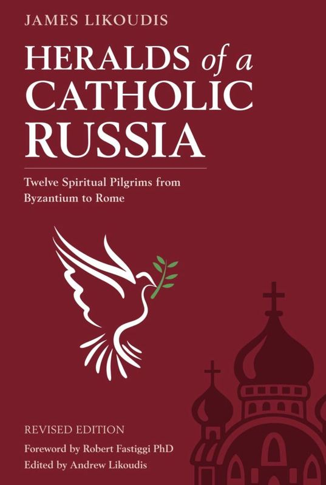

Complete Catalog
All Titles
Faith in Crisis
Buy Online →The Pope, The Council, and The Mass
View on Amazon →
Scholars of the Sacred
View on Amazon →
Eastern Orthodoxy and the See of Peter
View on Amazon →
Aquinas on Reasons for our Faith
View on Amazon →Heralds of a Catholic Russia
View on Amazon →
Unpacking Palamism
View on Amazon →
Mary, Star of the New Evangelization
View on Amazon →
Ending the Byzantine Greek Schism
View on Amazon →
Saints and the Struggle for a Christian Society
View on Amazon →
The Divine Mosaic
View on Amazon →The Divine Primacy
View on Amazon →